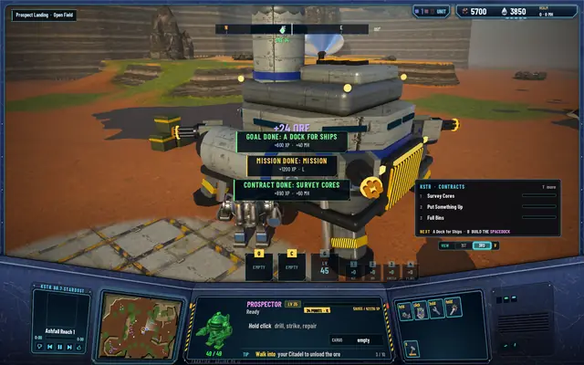
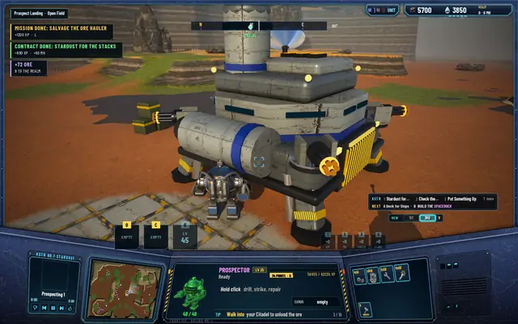
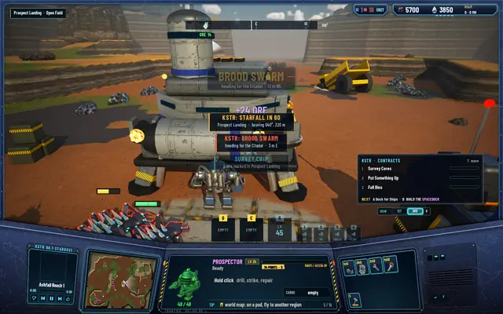
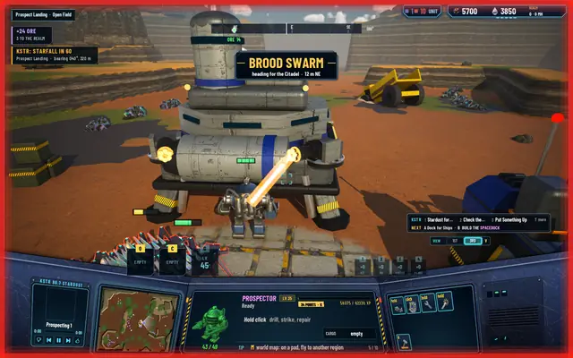
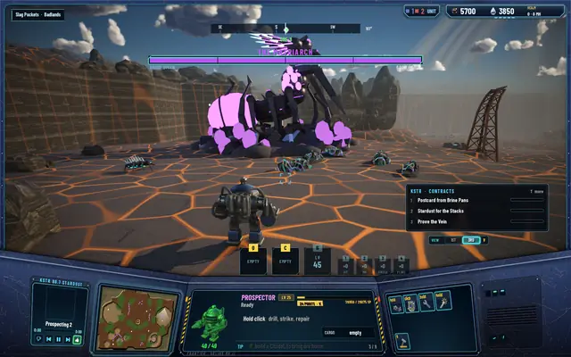
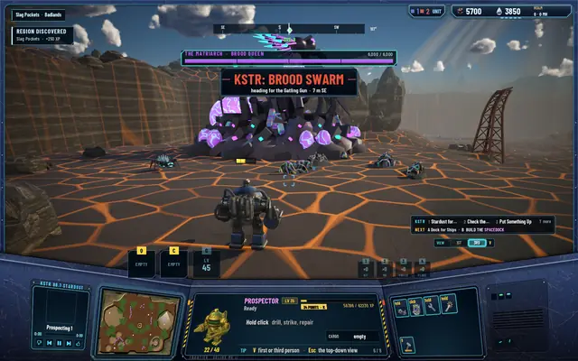
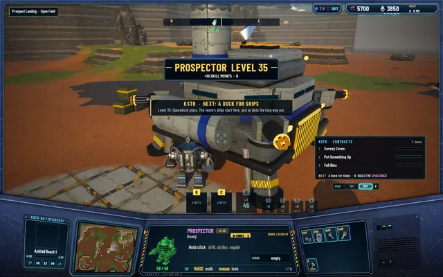
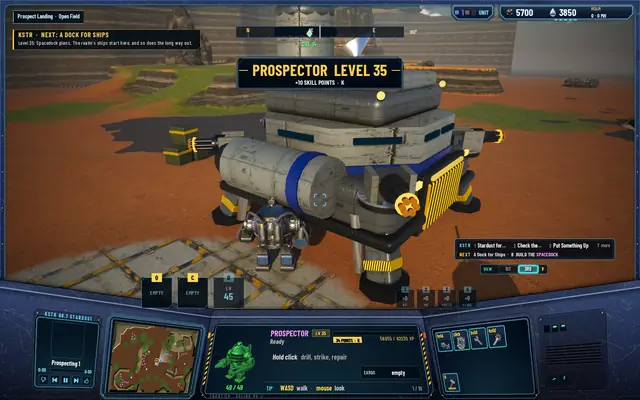
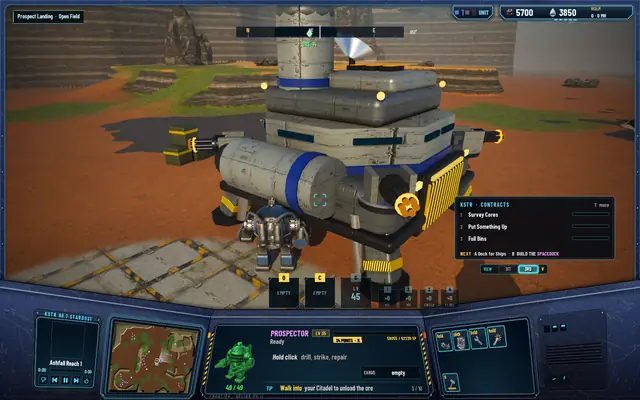
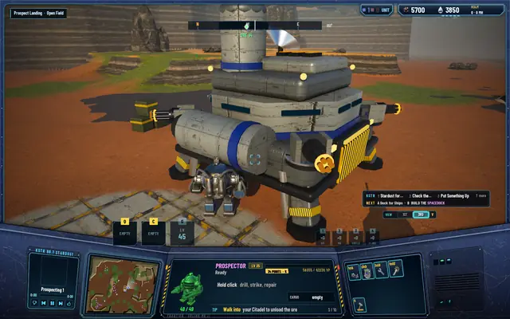

A quieter HUD: the same moments, before and after
Every feature this week brought its own message: goals, missions, contracts, raids, starfalls, the Matriarch. They all landed in the middle of the screen, on top of the Prospector and on top of each other. Now each kind of message has one place to go.

Where things go now
Toasts go in one lane at the upper left, three at most; the rest wait their turn. The same news arriving twice is merged into one, and unloads add up, so a run of deliveries reads "+72 ORE · 9 TO THE REALM" instead of a stack of small ones.
The big moments get one banner slot under the compass: a level-up, a raid warning, the Matriarch down, a region's name when you arrive. They come one at a time, and they wait while a screen like the Journal or the map is open, so you don't miss one behind it.
The contract panel is one line of titles plus the NEXT line, 52 points tall where it was 158. It opens in full only when there's news about a contract. The Matriarch's boss bar is a compact plate under the compass. The Q, C and G slots moved to the left of the Prospector and the supplies to its right. And a finished job no longer says "CONTRACT DONE: CONTRACT".
Before and after

Before: a goal, a mission and a contract finishing at once, stacked on the Prospector.
After: the same moment, at the upper left. The panel is one line.
Before: a raid, a starfall and a delivery on top of each other.
After: the raid gets the banner, the rest go in the lane.
Before: the boss bar across the top.
After: a compact plate, with the raid banner under it.
Before: a level-up.
After: the same level-up.
Before: the contract panel, 158 points tall.
After: 52 points.


The XP that wasn't missing
The same pass looked into a 200 XP gap in the level bar. It turned out to be a 6 that looked like an 8 at 12 points. The digits are 13 points now.
Every test suite passes: 494 core, 241 server and 85 network.